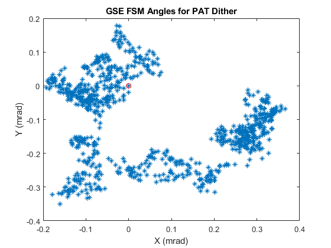

test_period_sec = 900;
dither_frequency_hz = 1;
boundary_rad = 3*(122.1730476 * 1e-6);
filename = ['pat_cmds_', num2str(dither_frequency_hz), 'hz_', num2str(test_period_sec),'sec.csv'];
dither_per_sec_sigma_rad = deg2rad(0.0183)/(3*10);
number_pts = test_period_sec*dither_frequency_hz;
dither_sigma_rad = dither_per_sec_sigma_rad/dither_frequency_hz;
sig_figs = 6;
angles_rel_rad = zeros(number_pts, 2);
angles_rad = zeros(number_pts, 2);
angles_rad(1,:) = [0,0];
angles_rel_rad(1,1) = round(normrnd(0,dither_sigma_rad), 6);
angles_rel_rad(1,2) = round(normrnd(0,dither_sigma_rad), 6);
for i = 2:number_pts
if(norm(angles_rad(i-1,:)) >= boundary_rad)
mu_dither = -3*dither_sigma_rad;
else
mu_dither = 0;
end
for j = 1:2
angles_rel_rad(i,j) = round(normrnd(sign(angles_rad(i-1,j))*mu_dither,dither_sigma_rad), 6);
angles_rad(i,j) = angles_rad(i-1,j) + angles_rel_rad(i,j);
end
end
angles_rad = [angles_rad; [0,0]];
angles_rel_rad = [angles_rel_rad; angles_rad(end,:) - angles_rad(end-1,:)];
number_pts = number_pts + 1;
TIME = linspace(0,test_period_sec,number_pts)';
X_CMD = angles_rel_rad(:,1);
Y_CMD = angles_rel_rad(:,2);
T = table(X_CMD,Y_CMD);
writetable(T,filename);
figure;
plot(angles_rad(:,1)*1e3, angles_rad(:,2)*1e3,'*');
hold on;
plot(angles_rad(end,1)*1e3, angles_rad(end,2)*1e3,'ro');
xlabel('X (mrad)');
ylabel('Y (mrad)');
title('GSE FSM Angles for PAT Dither');
hold off;
figure;
subplot(1,2,1);
histogram(1e3*angles_rad(:,1));
xlabel('X (mrad)');
title(['3\sigma_x (mrad) = ', num2str(3*std(angles_rad(:,1)))]);
subplot(1,2,2);
histogram(1e3*angles_rad(:,2));
xlabel('Y (mrad)');
title(['3\sigma_y (mrad) = ', num2str(3*std(angles_rad(:,2)))]);
figure;
subplot(2,1,1);
plot(TIME, angles_rel_rad(:,1)*1e3,'*');
ylabel('X_CMDS (mrad)');
title('GSE FSM Relative Angles for PAT Dither in Each Axis');
subplot(2,1,2);
plot(TIME, angles_rel_rad(:,2)*1e3,'*');
ylabel('Y_CMDS (mrad)');
xlabel('TIME (sec)');
